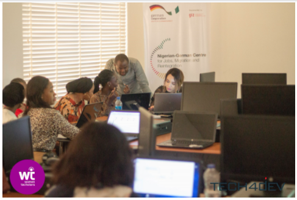
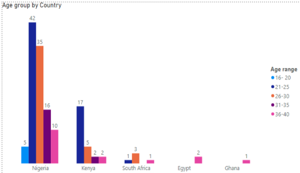

Back
Back
World Youths Skills Day: Reimagining Youth Skills Post-Pandemic
| July 19, 2021


The World Youths Skills Day is a day set aside yearly to celebrate the strategic importance of equipping young people with employment, decent work, and entrepreneurship skills. This day was first set aside by the United Nations (UN) in 2014 in alignment with Sustainable Development Goal (SDG) 8; Decent Work and Economic Growth. Since then, World Youth Skills Day has been the perfect platform for proper dialogue on the importance of Technical and Vocational Training (TVET) organisations for youth development.
The SDG 8, alongside other SDGs, is essential because they were designed to be "blueprints to achieving a better and more sustainable future for all." In achieving SDG 8, we must first acknowledge the reality of the shortage of jobs, especially in the developing parts of the world like Africa. Here is an excerpt from a paper released by International Labour Organization (ILO) themed Global Employment Trends for Youth 2020: Africa;
"The young people in Africa are confronted with multiple challenges ranging from economies that grew but could not create good jobs before the global financial and economic crisis, to sluggish growth post the crisis, in part, arising from adverse weather conditions and poor commodity prices.
Africa is the only region where the youth bulge will continue to grow in the foreseeable future, presenting both an opportunity to reap the demographic dividend and an imminent time bomb and threat to social cohesion as well as massive migration in search of opportunities, if appropriate policies are not implemented to harness the dividend. Just over one in five youth were not in employment, education or training (NEET) in 2019; this state of joblessness has been steadily growing since 2012 mirroring the trends in the global rate". This prevalent issue of unemployment has prompted the urgency in encouraging young people to acquire skills to aid their survival in an economy as dynamic as ours.
However, while the idea of acquiring just any skill is a fantastic one, the COVID-19 pandemic has shown that it might not be enough. During the lockdown resulting from the pandemic, many people were confined within the four walls of their homes, and people lost their jobs. The people who were able to keep working from their homes were digital literates able to use Information Technologies. As a result of this, the income inflow of several homes was cut short, thereby affecting a lot of economies. This situation opened the eyes of people to the bigger picture about acquiring digital skills.
The world is rapidly becoming a digital village, and the pandemic has shown us, more than ever before, that digital literacy is essential for work and even to stay connected with family and loved ones. Moving in the direction the world is going is the right move.
At Tech4Dev, we understand the importance of digital skills, and we believe in the efficacy of digital skills literacy as a tool for youth empowerment and development. Compared to youths born between 1946 – 1964, present-day youth must work smarter (more than harder) to live more fulfilling lives. This means that we are tasked with equipping youth with digital skills to strengthen leadership, development and spark much-needed change. Through our data from the Women Techsters Bootcamp (June Cohort) at Tech4Dev, more work needs to be done to upskill Africans, youth, and women to enable them to work smarter and live better.
According to data from United Nations Youth Population Division, as of 2015, there were 1.2 billion African youth aged 15-24 years globally, however by 2030, it is projected that the numbers will increase by 42%. In line with the World Youth Skills Day 2021, we are more excited to contribute to the digital adoption in Africa to demystify demands associated with the future of work.
This is the reason why we are committed to equipping youths with digital skills through our various programs. Some of which are the Emerging Markets Model initiative – an initiative designed by Microsoft to build the capacity of key government Ministries, Departments and Agencies (MDAs) to offer sustainable, scalable reskilling and employment services aligned to the local labour markets. We also have the OK Digital Education Academy digital training centres – an initiative of OK Foundation in collaboration with Tech4Dev, and OK Foundation; and the Women Techsters initiative- An initiative of Tech4Dev created to bridge the gender gap between male, and female in the tech space by equipping women with varying degrees of digital and deep tech skills.
We are excited to see better work-life standards and highlight more success stories of innovation and resilience for the African youth post-pandemic.